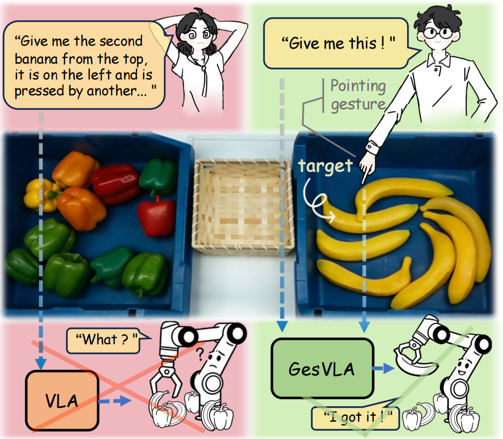
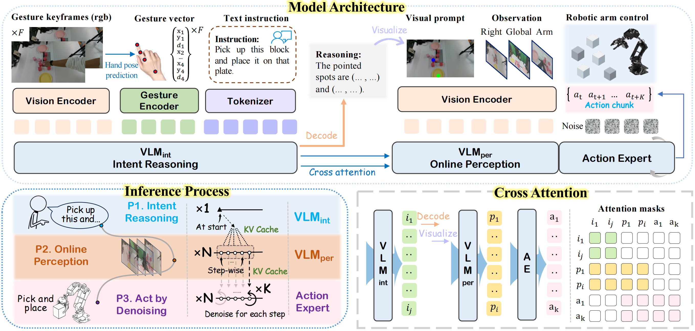
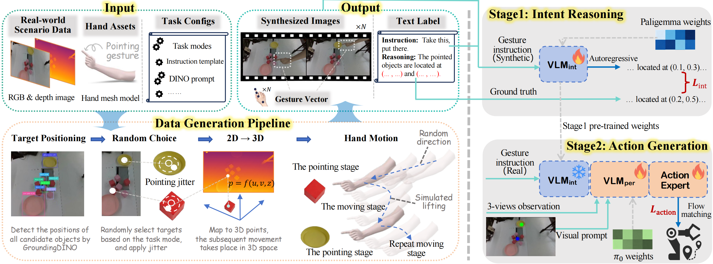
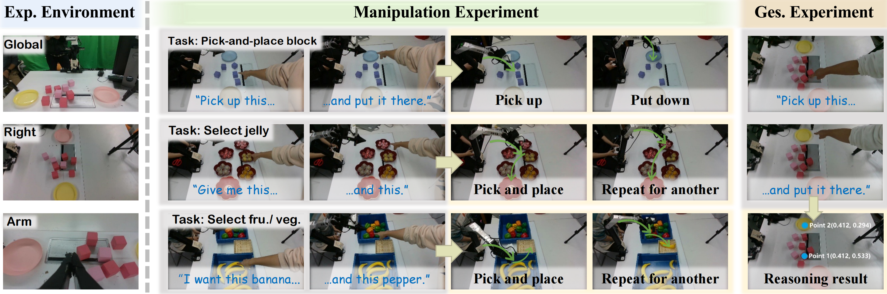
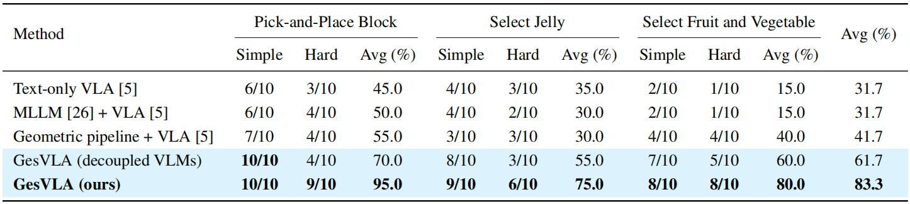
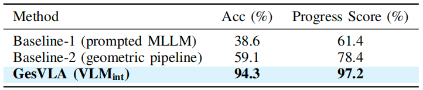
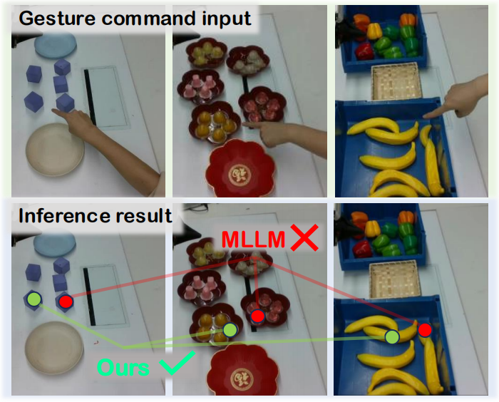

Gesture-aware GesVLA grounds “this / there” under clutter; language-only VLA stays ambiguous.
Real-world rollouts with a 7-DoF manipulator and three-camera observations (global, side, gripper). Each clip follows combined gesture-and-language instructions.
The robot must grasp a specified block from a cluttered arrangement of blocks and place it onto the designated plate. A trial is counted as successful if the correct block is grasped and placed properly. Following our setup, simple trials use fewer than five blocks on the table; hard trials use five or more.
Multiple jelly cups are placed on several plates on the table. The robot must grasp one or more specified jelly cups in the indicated pointing order and place them into a target plate. Success requires correctly grasping the targets from the correct plates in the correct order and completing the placement. Simple settings use a single pick-and-place; hard settings use sequential multi-object pick-and-place.
Various bell peppers and bananas are placed in two produce bins. The robot must grasp one or more specified objects in the indicated pointing order and place them into a basket. A trial is successful only if the exact target objects are grasped and placed in the correct order.
If the video does not load, click HERE to download.
Vision-Language-Action (VLA) models have shown strong potential for general-purpose robot manipulation by unifying perception and action. However, existing VLA systems primarily rely on textual instructions and struggle to resolve spatial ambiguity in complex scenes with multiple similar objects. To address this limitation, we introduce gesture as a parallel instruction modality and propose a Gesture-aware Vision-Language-Action model (GesVLA). Our approach encodes gesture features directly into the latent space, enabling them to participate in both high-level reasoning and low-level action generation, and adopts a dual-VLM architecture to achieve tight coupling between gesture representations and action policies. At the data level, we construct a scalable gesture data generation pipeline by rendering hand models onto real-world scene images. This reduces the sim-to-real visual gap while producing rich data with diverse motion patterns and corresponding pointing annotations. In addition, we employ a two-stage training strategy to equip the model with both gesture perception and action prediction capabilities. We evaluate our approach on multiple real-world robotic tasks, including a controlled block manipulation task for validation and more practical scenarios such as product and produce selection. Experimental results show that incorporating gesture consistently improves target grounding accuracy and human-robot interaction efficiency, especially in complex and cluttered environments.
Dual-VLM architecture. GesVLA separates intent reasoning (VLMint) from online perception (VLMper) and action generation. Gesture keypoints are encoded as latent tokens; VLMper cross-attends to cached states from VLMint for efficient inference, and a flow-based action expert denoises continuous action chunks.

Data engine and training. We synthesize pointing trajectories on real RGB-D backgrounds with precise 3D targets, building a semi-synthetic dataset for Stage 1 intent pre-training; Stage 2 trains perception and the action expert on real demonstrations with VLMint frozen.

Setup and tasks. We evaluate intent reasoning (88 real scenes) and manipulation with a 7-DoF arm using three cameras: pick-and-place blocks, select jelly, and select fruit/vegetable under gesture-language instructions.

Real-robot manipulation. GesVLA improves average success over text-only and pipeline baselines across simple/hard splits of all three tasks.

Intent reasoning. Joint modeling of gesture and language yields strong accuracy on held-out real gesture-language trials.

Qualitative comparison. Native MLLMs often pick the object nearest the fingertip; VLMint better follows the pointing direction in clutter.

© Wenxuan Guo | Last update: May 11, 2026